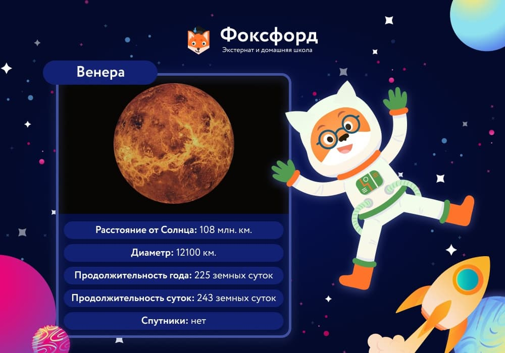

Меркурий
Самая близкая к Солнцу и самая маленькая планета солнечной системы — Меркурий лишь немного больше Луны. Меркурий получает в семь раз больше тепла и света, чем Земля, поэтому температура его поверхности колеблется от +430°C днём до −190°C ночью. Это самый большой температурный перепад в солнечной системе.
Несмотря на то что люди наблюдали Меркурий на небе с древнейших времён, известно о нём немного. Первый снимок его поверхности был получен только в 1974 году. Она оказалась покрыта многочисленными кратерами и скалами.
Атмосфера практически отсутствует — возможно, причиной тому солнечное излучение, а может быть, небесное тело такого размера просто не в состоянии удерживать плотную газовую оболочку.
Поскольку для оборота вокруг Солнца Меркурию нужно пройти гораздо меньшее расстояние, чем Земле, год на нём значительно короче — всего 88 земных суток. За один меркурианский день успевает пройти более двух местных лет. Поскольку ось вращения планеты почти не наклонена, год на ней не делится на сезоны.
Венера
Венера - вторая планета от Солнца и ближайшая к Земле. Венеру иногда называют «близнецом» нашей планеты: её размеры и масса очень близки к земным. Однако на этом сходство заканчивается.
Венера окутана очень плотным слоем облаков, за которыми невозможно разглядеть поверхность. Из-за парникового эффекта она нагревается до 480°C — абсолютный рекорд для солнечной системы. Облака проливаются кислотными дождями и пропускают только 40% солнечного света, поэтому на планете царит вечный сумрак.
Из-за сильнейшего атмосферного давления (как на глубине 900 метров в земных океанах) ни один исследовательский аппарат, отправленный на Венеру, не просуществовал дольше двух часов. Тем не менее учёным удалось узнать, что атмосфера планеты на 94% состоит из углекислого газа, а состав грунта не отличается от других планет земной группы. На Венере много вулканов, но почти нет кратеров — все метеориты сгорают в плотной атмосфере.

День на Венере длится дольше, чем на любой другой планете — около 243 земных суток. Продолжительность года чуть уступает дню — 225 земных суток. Как и на Меркурии, сезонов на Венере нет.
Облака Венеры хорошо отражают солнечный свет, поэтому на земном небе планета светится ярче других. Возможно, именно поэтому древние римляне связали её с богиней красоты и любви. Примечательно, что Венера — одна из двух планет солнечной системы, вращающихся вокруг оси по часовой стрелке.
Земля

Земля — третья планета от Солнца и крупнейшая в земной группе. Уникальные условия Земли позволили развиться на планете жизни.
Атмосфера Земли состоит из азота (78%), кислорода (21%), углекислого и других газов (1%). Кислород и азот — необходимые вещества для строительства ДНК. Озоновый слой атмосферы поглощает солнечную радиацию. Кислород на Земле синтезируют растения из углекислого газа. Не будь их, наша планета напоминала бы Венеру. С другой стороны, некоторое количество CO2 в атмосфере обеспечивает на Земле комфортную для жизни температуру.
70% поверхности Земли покрыты водой. В отличие от Луны и Меркурия, на Земле очень мало кратеров. Учёные считают, что они исчезли под воздействием ветра и эрозии почвы.
Из-за наклона Земной оси (23,45°) на Земле хорошо различимы сезоны года. Для оборота вокруг своей оси Земле требуется чуть менее 24 часов — это самый короткий день среди планет земной группы.
Земля имеет спутник — Луну. Её размер составляет ¼ земного диаметра, что довольно много для спутника. Притяжение Луны влияет на земную воду, вызывая приливы и отливы. Вращение Луны вокруг своей оси и вокруг Земли синхронно, поэтому Луна всегда обращена к Земле только одной стороной.

Земля — единственная планета, название которой не связано с мифологией. И русское «земля», и английское «earth», и латинское «terra» обозначают почву или сушу.
Марс

Марс — четвертая планета от Солнца — меньше Земли почти в два раза. Долгое время считалось, что на красной планете существует жизнь. Люди наблюдали на его поверхности объекты, казавшиеся им постройками, дорогами и даже гигантскими скульптурами. Однако на поверку марсианская цивилизация оказалась обманом зрения. Многочисленные исследовательские миссии пока тоже не подтвердили наличие какой-либо жизни на поверхности планеты.

Атмосфера Марса по составу напоминает венерианскую — 95% углекислого газа. Но поскольку она очень тонкая и разреженная, парникового эффекта не возникает, поэтому максимальная температура поверхности планеты — около 0°C, а атмосферное давление в 160 раз меньше, чем на Земле. В составе марсианской атмосферы есть водяной пар, а на полюсах лежат шапки ледников, но жидкой воды на поверхности нет.
И всё же учёные считают Марс самой перспективной планетой для освоения, поскольку погодные условия на ней довольно приемлемы для человека. Если не считать низкое содержание кислорода в атмосфере, радиацию и пылевые бури, длящиеся по несколько месяцев. На Марсе находится самая высокая гора в солнечной системе — вулкан Олимп, высота которого 27 километров. Это в три раза выше Эвереста, высочайшей горы Земли.
Из-за удалённости от Солнца год на Марсе почти в два раза длинней земного. Скорость вращения вокруг своей оси почти такая же, как на Земле, так что сутки длятся 24 часа 40 минут. Наклон оси Марса составляет 25,2°, а значит, на нём, как и на Земле, существуют сезоны.
Марс имеет два спутника — Фобос и Деймос, представляющие собой бесформенные каменные глыбы сравнительно небольших размеров. Из-за красного цвета древние римляне назвали планету именем бога войны.
Юпитер
Юпитер, самая большая из планет-гигантов, отделена от Марса поясом астероидов. Масса Юпитера в два раза больше, чем масса всех остальных планет, лун, комет и астероидов системы вместе взятых. По яркости на земном небе он уступает только Венере. Люди наблюдали его с древнейших времён и связывали с сильнейшими богами своих пантеонов. Юпитер — имя римского царя богов.
Юпитер является газовым гигантом. Коричневые и белые полосы — это облака соединений серы, которые движутся в атмосфере планеты с чудовищной скоростью. Большое красное пятно Юпитера — гигантский вихрь. С момента его обнаружения в 1664 году он стал заметно меньше, но и теперь в несколько раз превосходит Землю по размерам.
О структуре планеты учёные пока только догадываются. Предположительно она состоит из газов, плавно переходящих в металлическое состояние по мере приближения к ядру. Считается, что ядро Юпитера каменное. Сильнейшее в системе магнитное поле Юпитера воздействует на частицы в миллионах километрах вокруг и даже достигает орбиты Сатурна. Это одна из причин огромного числа спутников у планеты.

В 1610 году астроном Галилео Галилей обнаружил четыре крупнейших спутника Юпитера. В наше время известно 79 объектов, вращающихся вокруг планеты. Некоторые из них напоминают Луну, другие выглядят как большие астероиды. Особый интерес представляет Ио — планета с мощнейшими в системе вулканами. Более мелкие частицы образуют вокруг Юпитера кольца, хотя они не так заметны, как у соседнего Сатурна.
Сатурн
Шестая планета от Солнца. Как и спутники Юпитера, Сатурн был обнаружен Галилеем в начале XVII века. На сегодняшний день эта планета остаётся одной из наименее изученных.
Атмосфера Сатурна состоит из водорода (96%) и гелия (4%) с незначительными вкраплениями других газов. Скорость ветра на Сатурне достигает 1 800 км/ч — это самые сильные ветра в системе. Облака в его атмосфере тоже образуют полосы и пятна гигантских вихрей, хоть и менее заметные, чем на Юпитере.
О происходящем за атмосферным слоем планеты известно мало. Предположительно, в центре находится металлосиликатное ядро, окружённое спрессованными до состояния металла газами, плотность которых уменьшается по мере удаления от ядра.
Планета находится в 9,5 раз дальше от Солнца, чем Земля, и делает оборот вокруг звезды за 29,5 земных лет. Наклон оси Сатурна напоминает земной. По скорости вращения вокруг своей оси Сатурн уступает только Юпитеру. Как и у других газовых гигантов, скорость вращения на разных широтах у планеты разная. Это происходит потому, что поверхность Сатурна текучая, а не твёрдая. Плотность Сатурна так мала, что он мог бы плавать на поверхности воды.
Главная особенность Сатурна — впечатляющая система из семи колец. Они состоят из миллиардов ледяных осколков, которые отлично отражают свет, а потому хорошо заметны. Радиус колец огромен — 73 000 километров, а толщина — всего 1 километр. Считается, что эти кольца — осколки спутника, разрушенного гравитацией планеты.
Недавние исследования показали, что вокруг Сатурна вращаются 82 спутника — на данный момент это рекорд солнечной системы (до 2016 года лидером считался Юпитер). Все спутники покрыты льдом. Крупнейший, Титан, имеет плотную азотистую атмосферу и озёра жидкого метана на поверхности. На другом спутнике, Энцеладе, обнаружена жидкая вода, выталкиваемая на поверхность гейзерами. Это делает его крайне интересным объектом для изучения.
Сатурн назван именем древнеримского бога времени, отца Юпитера.
Уран
Седьмая планета от Солнца. Уран был открыт сравнительно недавно — в 1781 году. В 1986 году его достиг единственный космический аппарат — «Вояджер-2».
Атмосфера планеты окрашена в однородный сине-зелёный цвет. Учёные предполагают, что такой её делает метан. Ядра Урана и Нептуна предположительно состоят изо льдов, поэтому их называют «ледяными гигантами». Уран — самая холодная планета в системе: средняя температура его поверхности составляет −224°C. Скорость ветра на Уране достигает 900 км/ч. Солнечный свет летит до Урана чуть менее трёх часов, а год на планете равен 84 земным.
Как и Сатурн, Уран окружён кольцами. Они не столь яркие и расположены под углом около 90° к орбите, в то время как сама планета вращается «на боку» (угол отклонения оси — 99°). В результате половину уранианского года на южном полушарии длится день, а на южном — ночь. А следующие полгода — наоборот.
Подобно Венере, Уран вращается вокруг своей оси по часовой стрелке. На настоящий момент известно 23 спутника Урана, все покрыты льдом. Уран назван именем древнегреческого бога неба, отца Сатурна, и продолжает «семейную» линию.